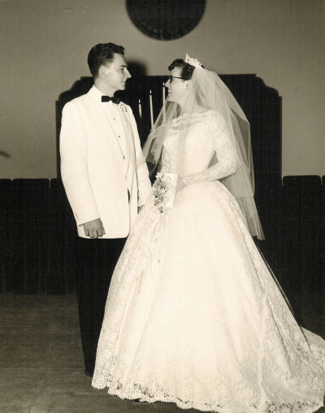

| Our Story | |
 |
Photo: Our Wedding Day, June 5 1959.
Bob went to Pasadena College (now Point Loma Nazarene University) in the fall of 1956. Back then mid-term students were accepted, so I (Mary) arrived in February, 1957. We each lived in dorms on campus, and in addition to classes, both of us enjoyed our social lives. We didn't meet each other until January, 1958. Later, Bob told me he noticed me when I first came, but I had no recollection of seeing him until I met him through a friend. Since this friend had a "crush" on him (she never admitted it, but it was quite obvious!), I was "blind" to the fact that he was trying to get my attention! I was oblivious to it! He was very shy. But gradually, over a period of time, I began to think maybe it might be fun to go out with him. On a Friday night, toward the end of March, I was planning to go to the wedding of some friends in a neighboring town. I was going to ride with a guy who was in the wedding party. But the evening before, I found out the wedding party was going all together in one car, and there wasn't room, so I wouldn't be going. |
|
After picking up my mail the next afternoon, I was on my way back to my dorm, and who should cross my path, also on his way to my dorm to find me? Bob! He scuffed his toe in the dirt, hemmed & hawed around, then asked me if I would go out with him that evening. As it "happened", I was free and agreed to go. We had a great time, and neither of us ever dated anyone else after that!
We were married the next year - June 5, 1959. As I write this, our 50th anniversary is approaching this June. God has blessed us abundantly over the years. Bob had planned on being a college professor. But the Lord changed that plan and clearly led him into a career as a computer programmer ("geek" ha!) It was a career he thoroughly enjoyed. The company he worked for moved us back and forth across the country several times. Shelly (Michelle) was born in April, 1961, Scott was born in July, 1963, Randy (Randall) was born in July, 1965, and Matt (Matthew) was born in April, 1973. As a result of all our moves, our two older children have settled on the east coast and the other two on the west coast! It's a rarity for all of us to get together at the same time, but we do look forward to those times. During the first couple of years of our marriage I worked full-time while Bob finished at PC and took a year of grad. work at UCLA. Then I became a stay-at-home mom and Bob started his career in 1961 when computers were still a pretty new field. He worked for the same company for 30 years. We started out in CA, then the company moved us to VA, back to CA, to AL, CA, VA, CA. During those last years in CA, I went back to work, first for a temp. agency, then I became the office secretary for our church. How office work had changed between 1961 and 1989! Little did we know what the Lord was preparing us for. He began talking to us about making a big change in our lives - going into full-time lay ministry. So Bob took an early retirement and we moved to Silverton, OR (we had never been there!) where the lord was calling us to help restart the Church of the Nazarene. Bob's computer skills and my office experience were a big help in our ministry. We were there for 5 years. Those were wonderful years! Then another big surprise - the Lord called us to go up to Hope, B.C. (we'd never been to Canada!) to lay the groundwork for starting a Nazarene church there. We had a few months' break while waiting for visas to move there. We were there by ourselves for two years, getting involved in the community in various areas of ministry. Then we got a pastor and worked with him for three more years. Those were wonderful years too. At that point the Lord told us we were to go back to the States, but He gave us no specific assignment. Through much prayer, He led us to move to Castle Rock, WA, and to attend the Longview Nazarene Church - second retirement! We've lived in the Pacific Northwest for 17 years now, and we love it! We are enjoying these "golden years" - God has blessed us so abundantly throughout our lives. |
|